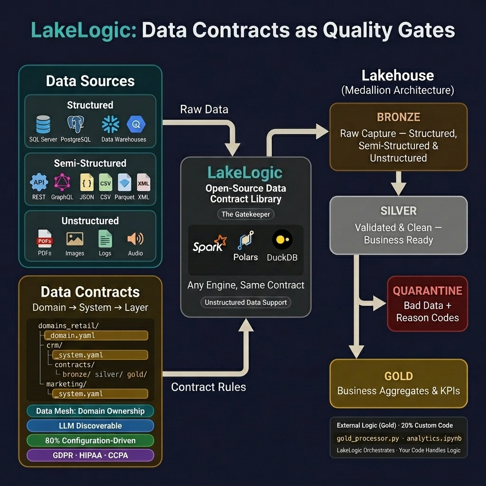

Architecture Overview
Think of LakeLogic as a quality inspector on a factory floor. Raw materials (data) arrive at the loading dock (Bronze), get inspected and cleaned on the assembly line (Silver), and are packaged into finished goods (Gold) for customers (dashboards, ML models, APIs). At every stage, defective items are pulled aside for review — nothing is silently thrown away.
High-Level Lifecycle

The Three Layers
🟤 Bronze — The Loading Dock
Goal: Capture 100% of what arrives. No filtering, no cleaning, no opinions.
Think of Bronze as your security camera footage — you record everything exactly as it happened, even if it's messy. This gives you an immutable audit trail to go back to when something goes wrong downstream.
| What happens | Why it matters |
|---|---|
| Raw data is stored as-is | You can always replay from the original source |
| No quality rules applied | Zero ingestion failures, zero silent drops |
| Schema evolution allowed | New columns don't break your pipeline |
⚪ Silver — The Assembly Line
Goal: Validated, cleaned, and queryable data that business teams can trust.
This is where the real work happens. LakeLogic acts as a quality gate — every row must pass your rules or it gets quarantined with a clear reason code.
┌─────────────────┐
Bronze Data ──▶ │ QUALITY GATE │ ──▶ Silver (Good)
│ │
│ 1. Pre-process │
│ rename, trim │
│ dedup, cast │
│ │
│ 2. Schema check │
│ types, nulls │
│ │
│ 3. Quality rules│
│ business │
│ validations │
│ │
│ 4. Post-process │
│ enrich, join │
└────────┬────────┘
│
Failed rows
▼
┌─────────────────┐
│ QUARANTINE │
│ with error │
│ reasons │
└─────────────────┘
| What happens | Why it matters |
|---|---|
| Row-level validation | Bad data is caught before it reaches reports |
| Error reason codes | Data owners know exactly what to fix |
| 100% reconciliation | source_count = good_count + bad_count — nothing lost |
🟡 Gold — Finished Goods
Goal: Business-ready aggregations, KPIs, and data products.
Gold tables are what your stakeholders actually consume. These are curated datasets optimized for a specific business purpose — like a monthly revenue summary or a customer segmentation model.
| What happens | Why it matters |
|---|---|
| Aggregations and KPIs | Dashboards load fast, numbers are pre-calculated |
| Dimension joins | Enrich facts with customer names, product categories |
| ML feature engineering | Data scientists get clean, ready-to-use features |
You can build Gold tables using SQL in the contract, external Python scripts, or Jupyter notebooks — whatever fits your team's workflow.
Write Once, Run Anywhere
LakeLogic separates what you want (the contract) from how it runs (the engine). The same YAML contract runs on your laptop during development and on a Spark cluster in production — zero code changes.
┌─────────────────────────┐
│ customer_contract.yaml │
│ │
│ quality: │
│ - email LIKE '%@%' │
└───────────┬─────────────┘
│
┌─────────┼─────────┐
▼ ▼ ▼
Polars Spark DuckDB
(laptop) (cluster) (CI/CD)
Why this matters: Your data engineer writes a contract once, tests it locally with Polars in seconds, then deploys it to Databricks on Spark — same rules, same results, different scale.
Engine Auto-Discovery
LakeLogic picks the best available engine automatically:
LAKELOGIC_ENGINEenv var (your explicit choice)- Spark — if running inside Databricks or Synapse
- Polars — preferred for single-node (fastest)
- DuckDB — lightweight alternative
Snowflake and BigQuery are available for table-only processing (engine="snowflake" or engine="bigquery").
The Reconciliation Guarantee
Every row that reaches the quality gate is accounted for. No exceptions.
- ✅ Good rows → flow to the next layer
- ✅ Bad rows → quarantined with error reasons attached
- ❌ Nothing is silently dropped at the validation stage
What About Dedup and Filters?
Pre-processing steps like deduplicate and filter are declared reductions — they run before the quality gate, and they're part of your contract, not silent drops. Think of it like a mail room: junk mail is sorted out before the security scan, but it's logged in the intake ledger.
The run log captures both sides:
| Run log field | What it tracks |
|---|---|
counts_source |
Total rows from the source (before any transformations) |
counts_total |
Rows after pre-processing (dedup, filter) |
counts_good |
Rows that passed validation |
counts_bad |
Rows that failed validation (quarantined) |
This means you always have full traceability: counts_source shows what arrived, counts_total shows what reached the gate, and good + bad = total.
Deduplicated and filtered rows are not quarantined — they're expected reductions, not quality failures. Quarantine is reserved for rows that are genuinely broken and need fixing.
Crucially, duplicate rows are always retained in Bronze. Deduplication only happens at the Bronze → Silver gate, so you can always go back to the raw layer and replay from the original source. Nothing is ever truly lost.
Key Principles
| Principle | What it means |
|---|---|
| Separation of Concerns | Bronze captures, Silver validates, Gold aggregates — each layer has one job |
| Contract-Driven | Rules live in YAML, not scattered across Python scripts |
| Engine-Agnostic | Same contract, different execution engine |
| Zero Silent Drops | Every row is either promoted, quarantined, or explicitly reduced by a declared transformation |
| Full Traceability | Run logs capture source counts, post-transform counts, and validation results |
Environment Overrides
Deploy the same contract across dev, staging, and production with environment-specific paths:
server:
type: s3
path: s3://prod-bucket/data/customers
environments:
dev:
path: s3://dev-bucket/data/customers
format: parquet
prod:
path: s3://prod-bucket/data/customers
format: delta
Why this matters: One contract, multiple environments. No copy-paste, no drift between dev and prod configurations.
What's Next?
- How it Works — Deep dive into transformations, validation, and materialization
- Contract Organization — Structuring contracts for enterprise scale
- Tutorials & Examples — Get hands-on in 5 minutes